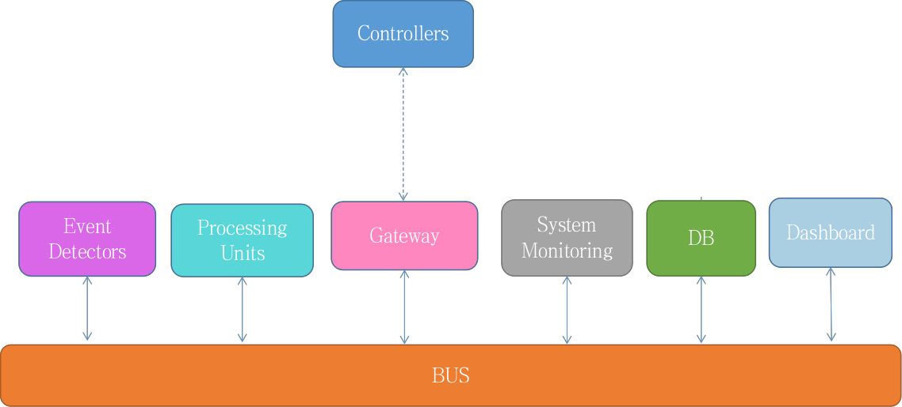

Domotic
1
0-CLIENT
1 - USER MANUAL
2 - SPECIFICATION
3- DEVELOPMENT
4 - TEAM
Domotic
Docs
»
Solution and Technologies
View page source
Solution and Technologies
¶
Architecture
¶

Figure 2: Solution architecture with main modules
Deploy project with Docker
Docker Compose
Jenkins
Deploy Steps
Enterprise Bus: Rabbit MQ
Topics
Processing Units & Event Detectors
Alarm1
Data & Controllers
Data format
Sensors
Data
Simulation
Gateway: REST
Format
System monitoring : ELK
Ports
kibana website
Persistence : JPA / PostgreSQL
Table
Queries
Dashboard : JSF
Dashboard